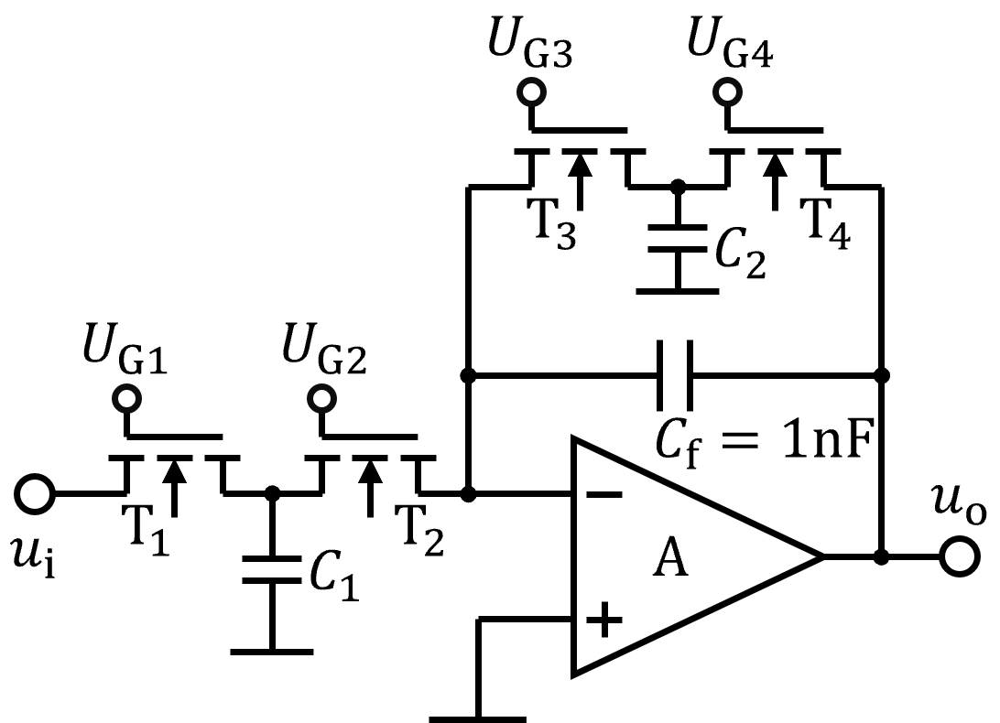

开关电容滤波电路
\(\mathrm{T}_1、\mathrm{T}_2和C_1\)构成的等效电阻\(R=\dfrac{T_\mathrm{CP1}}{C_1}\)
\(\mathrm{T}_3、\mathrm{T}_4和C_2\)构成的等效电阻\(R_\mathrm{f}=\dfrac{T_\mathrm{CP2}}{C_2}\)
图示电路的传递函数
$$ \begin{equation*} A_\mathrm{u}(\mathrm{j}f) = -\frac{R_\mathrm{f}}{R}\frac{1}{1+\mathrm{j}f R_\mathrm{f}C_\mathrm{f}} \\ = -\frac{T_\mathrm{CP2}/{C_2}}{T_\mathrm{CP1}/{C_1}}\frac{1}{1+\mathrm{j}f C_\mathrm{f}T_\mathrm{CP2}/{C_2}} \end{equation*} $$

若\(f_\mathrm{CP1}=f_\mathrm{CP2}=\frac{1}{T_\mathrm{CP}}\)：
22
\(C_1\)：
50 pF
\(C_2\)：
50 pF
高频截频：\(f_\mathrm{H}=\dfrac{C_2f_\mathrm{CP2}}{C_\mathrm{f}}=\)
62.0kHz
中频增益：\(A_0=-\dfrac{C_1 f_\mathrm{CP1}}{C_2 f_\mathrm{CP2}}=\)
-1.00